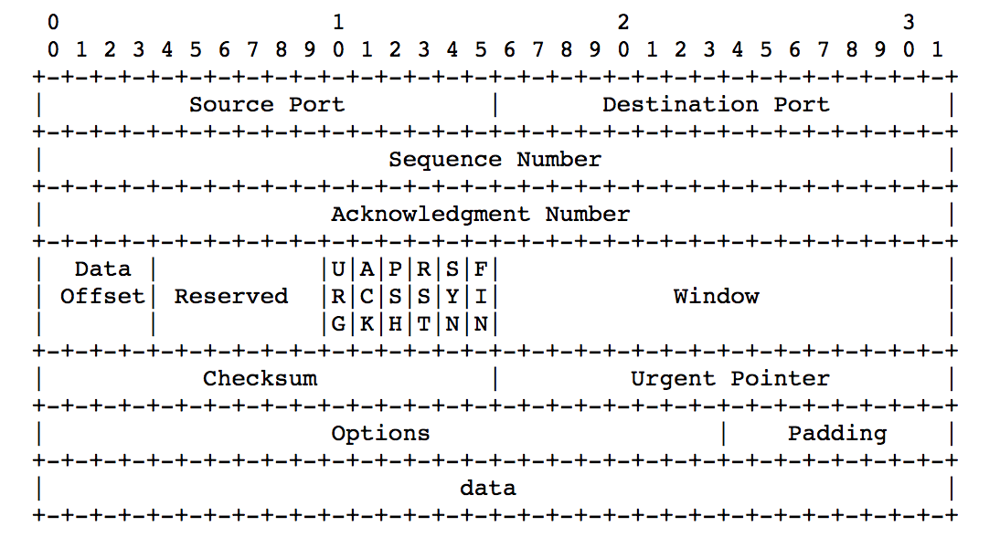

2017-April-04
Most programming languages provide I/O facilities over streams of bytes. For instance, the Java abstract classes java.io.InputStream and java.io.OutputStream declare interfaces for performing input and output on byte streams. These interfaces are implemented by classes dedicated for performing I/O on files, pipes and in-memory buffers. Sometimes we also have to deal with streams of bits. Consider the frames in an MP3 file where the frame header is encoded as bit-fields of varying lengths. Another example is that of a TCP header, the layout of which is illustrated below:

Some fields in the TCP header are encoded using two or more bytes. For example, the Source and destination ports are 16 bits each (2 bytes). Sequence and acknowledgment numbers are 32 bit values (4 bytes). Normal byte streams should be sufficient for reading and writing these values. But there are also fields that do not fall on proper byte offsets. For instance, the data offset field is 5 bits and the reserved field is 6 bits. The six flags that follow are 1 bit each. As most I/O libraries treat bytes as the fundamental unit of information, special bit-twiddling code is required to encode and decode a TCP header. Writing such code can be difficult and error-prone. When we have to pack information in a space-efficient way, an abstraction that can perform I/O on streams of bits starts to look attractive!
In this post we develop such an abstraction for the JVM. In this process, we will learn how to mix high-performance Java code with Clojure. We will also see how the expressiveness of Clojure can enhance the usability of lower-level abstractions.
We will start with a simple and efficient library that allows us to read and write bits over an underlying stream.
This underlying stream must be an implementation of java.io.InputStream or java.io.OutputStream. As objects of
these classes can do I/O only on bytes, the bit stream library has to maintain some local state. At the bare minimum it will require a byte
to pack together the bits seen so far. An integer counter is needed to keep track of the current bit position.
As the library does I/O, fast and frequent updates to both these state variables become inevitable. So we will implement the lower-level
I/O code as two Java classes - bits.BitsReader and bits.BitsWriter.
package bits;
import java.io.InputStream;
import java.io.IOException;
/**
* Read bits from an InputStream.
*/
public class BitsReader {
private InputStream bytesInput;
private int currentByte;
private int bit;
public BitsReader(InputStream inputStream) {
bytesInput = inputStream;
currentByte = 0;
bit = 0;
}
/**
* Read the next bit, as either 1 or 0, from `bytesInput`.
* At the end of the input stream, return -1.
*/
public int read() throws IOException {
// `currentByte` is exhausted of bits, read the
// next byte from the InputStream.
if (bit == 0) {
currentByte = bytesInput.read();
if (currentByte == -1) return currentByte;
// Reset bit index to the beginning
// of `currentByte`.
// 128 = 10000000 in binary.
bit = 128;
return read();
} else {
// If `bit` is on in currentByte, return 1,
// if it is off, return 0.
int r = ((currentByte & bit) > 0) ? 1 : 0;
// Halving `bit` get the index ready to
// check for the next bit in `currentByte`.
bit = bit/2;
return r;
}
}
/**
* Read the next `n` bits from input, pad those into
* a single integer value. Return -1 at end of stream.
*/
public int read(int n) throws IOException {
if (n <= 0 || n > 32)
throw new IOException("invalid bit-count in read");
int r = 0;
for (int x = n-1; x >= 0; --x) {
int b = read();
if (currentByte == -1) return -1;
r |= (b << x);
}
return r;
}
/**
* Align input to the next byte in `bytesInput`.
*/
public void align() {
bit = 0;
}
}
package bits;
import java.io.OutputStream;
import java.io.IOException;
/**
* Write bits to an OutputStream.
*/
public class BitsWriter {
private OutputStream bytesOutput;
private int currentByte;
private int bit;
public BitsWriter(OutputStream output) {
bytesOutput = output;
currentByte = 0;
bit = 7;
}
/**
* If atleast one bit was padded to `currentByte`,
* write it to the underlying OutputStream.
*/
public void flush() throws IOException {
if (bit < 7) bytesOutput.write(currentByte);
currentByte = 0;
bit = 7;
}
/**
* If `b` is not zero, turn on the bit in `currentByte` at
* position `bit`. If one byte is full, flush that to the
* OutputStream.
*/
public void write(int b) throws IOException {
if (bit == -1) {
flush();
write(b);
} else {
if (b != 0) currentByte |= (1 << bit);
bit -= 1;
}
}
/**
* Extract `n` bits from the integer `b` and write that to
* the OutputStream.
*/
public void write(int b, int n) throws IOException {
if (n <= 0 || n > 32)
throw new IOException("invalid bit-count in write");
for (int x = n-1; x >= 0; --x)
write(b & (1 << x));
}
}
Invoking these classes from Clojure is quite easy. We just need to update the lein
project.clj file with the path to the Java package. In the example project, I put the bits package in the
src/java folder. This path should be specified in the :java-source-paths property of the project file as shown below:
(defproject bit-stream "0.1.0"
:description "A Clojure library for bits IO."
:license {:name "Eclipse Public License"
:url "http://www.eclipse.org/legal/epl-v10.html"}
:java-source-paths ["src/java"]
:dependencies [[org.clojure/clojure "1.8.0"]])
You may want to define some simple wrappers to make the bit-stream functions easier to use from Clojure:
(ns bit-stream.core
(import [bits BitsReader BitsWriter]))
(defn make-reader
[input-stream]
(BitsReader. input-stream))
(defn read-bit
[reader]
(not (zero? (.read reader))))
(defn read-bits
[reader n]
(.read reader n))
(defn make-writer
[output-stream]
(BitsWriter. output-stream))
(defn flush-bits
[writer]
(.flush writer))
(defn write-bit
[writer b]
(.write writer (if b 1 0)))
(defn write-bits
[writer b n]
(.write writer b n))
Now we're all set to move on to the interesting part. Let's design an abstraction that will allow us to program bit-streams from a much higher-level. This new abstraction should enable us to specify bit-encoded data as first-class objects in Clojure. We will also write new bit-stream functions that can read and write data based on these specifications. We won't be calling I/O functions directly on bit-streams any more.
To understand our goal better, let us think about a simple object that can be bit-encoded. The example I have chosen is that of 16 bit colors, where the red and blue components are encoded in 5 bits and the green component is encoded in 6 bits. We can specify the structure of 16 bit colors as a vector of field names and their bit-lengths:
(def _16bit-color-spec [:red 5 :green 6 :blue 5])
Now we want to be able to encode three integer values into a single 16 bit color and decode a single 16 bit color value into red, green and blue components. The higher-level bit-stream functions that we are going to implement should enable us to do this:
(def encoded-color (bit-encode [:red 2 :green 52 :blue 16])
_16bit-color-spec))
(bit-decode encoded-color _16bit-color-spec)
;; [:red 2 :green 52 :blue 16]
The definitions of bit-encode and bit-decode are shown below:
(defn bit-encode
"Return a byte-array with `data` bit-encoded into it.
`data` is a vector in the format:
[field-name1 value1, field-name2 value2, ...]
`spec` is a vector in the format:
[field-name1 bit-field-size1, field-name2 bit-field-size2, ...]
Values in `data` will be encoded with corresponding
bit-field sizes in `spec`.
`field-names` in both `data` and `spec` are ignored
during the encoding process."
[data spec]
(let [ba (java.io.ByteArrayOutputStream.)
encoder (make-writer ba)]
(loop [data-values (filter integer? data)
bit-field-sizes (filter integer? spec)]
(if (and (seq data-values) (seq bit-field-sizes))
(do (write-bits encoder (first data-values)
(first bit-field-sizes))
(recur (rest data-values) (rest bit-field-sizes)))
(do (when (seq data-values)
(throw (Exception. "more data values")))
(when (seq bit-field-sizes)
(throw (Exception. "more bit field lengths"))))))
(flush-bits encoder)
(.toByteArray ba)))
(defn bit-decode
"Decode a byte-array returned by `bit-encode`.
`spec` is a vector in the format:
[field-name1 bit-field-size1, field-name2 bit-field-size2, ...]
A new vector is returned with the same field-names
as `spec` and the associated values
being integers initialized by reading the appropriate number
of bits from the encoded stream."
[encoded-data spec]
(let [bi (java.io.ByteArrayInputStream. encoded-data)
decoder (make-reader bi)]
(loop [field-names (filter keyword? spec)
bit-field-sizes (filter integer? spec)
result []]
(if (seq field-names)
(recur (rest field-names) (rest bit-field-sizes)
(concat result [(first field-names)
(read-bits decoder
(first bit-field-sizes))]))
(vec result)))))
We can now easily decode and encode complicated structures like the TCP header.
We just have to translate the layout of the data into a specification vector and apply bit-encode
and bit-decode to it.
(def tcp-header-spec
[:source-port 16
:destination-port 16
:sequence 32
:acknowledgement-number 32
:data-offset 4
:reserved 6
:urg-flag 1
:ack-flag 1
:push-flag 1
:reset-flag 1
:syn-flag 1
:fin-flag 1
:receive-window-size 16
:checksum 16
:urgent-pointer 16])
(defn encode-tcp-header
[header]
(bit-encode header tcp-header-spec))
(defn decode-tcp-header
[encoded-header]
(bit-decode encoded-header tcp-header-spec))
;; Example usage:
(let [sample-header [:source-port 38
:destination-port 47892
:sequence 1656212531
:acknowledgement-number 1481973485
:data-offset 5
:reserved 0
:urg-flag 0
:ack-flag 0
:push-flag 0
:reset-flag 0
:syn-flag 0
:fin-flag 0
:receive-window-size 17664
:checksum 888
:urgent-pointer 63404]]
(= (decode-tcp-header (encode-tcp-header sample-header)
sample-header))
;; true
The basic bit-stream library is mostly based on a similar abstraction from the book More OCaml : Algorithms, Methods & Diversions. Pattern based encoding and decoding of bit-streams was inspired by Erlang's bit syntax. Chapter 7 of the book Programming Erlang cover this topic well.
Source code for the bit-stream library.